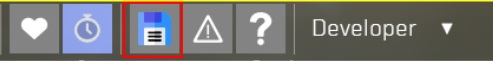

Placeable In-Game Light with Render Instance and Dynamic Model Support
Feature Overview
This feature enables the placement of light sources directly within the game environment, providing immediate visual feedback. It allows developers to fine-tune individual lights in real time without the need to create separate templates for each variation. Instead, adjustments can be made using scene overrides.
The system supports placing predefined light fixture templates that include both the light source and associated rendinst or dynmodel components. To use this functionality, a dedicated template must be created, containing references to the appropriate mesh and light source assets.
For ease of use and clarity, the light template should ideally be self-contained. This ensures that all necessary elements are defined within a single template, making it easier to manage and review the setup at a glance.
Light Template Structure
A placeable light setup is defined using a game template that organizes all required components. The structure typically includes the following elements:
Game Template Name
Required Technical Templates
_use:t="entity_prefab"_use:t="replicating"_use:t="placeable_rendinst"(required if using a rendinst)
Light Template: Defines the light source configuration.
Dynmodel Template: Specifies the dynamic model associated with the light fixture.
Rendinst Reference: (If applicable). Reference to a render instance.
RelativeTransform Matrix: (Optional). Used to override the light’s transform relative to the main entity.
To maintain modularity and ease of reuse, it is recommended to keep light fixture templates separate from the light source definitions themselves. For example, templates can be stored in:
<project_name>/prog/gameBase/content/<project_name>/gamedata/templates/lights_placeable.blk
Example Configuration: Dynmodel with Rendinst and Light
is_ring_light_tripod_stand_a_on_flicker{ /* General template name for the object placed in the game.
This example represents a tripod stand with a flickering light. */
_use:t="entity_prefab" /* Required. Provides the base for relative transforms using local
coordinates relative to the rendinst.
Example matrix: [[1, 0, 0] [0, 1, 0] [0, 0, 1] [0, 0, 0]]. */
_use:t="replicating" // Required. Enables server-side replication of the entity.
_use:t="placeable_rendinst" /* Required only when using a rendinst.
Not needed for dynmodel-only setups. */
_use:t="is_ring_light_tripod_stand_a_flicker_mesh_a"
/* Required. Includes both the light template and dynmodel:
- Light: 'is_ring_light_tripod_stand_a_flicker_light_a_template'
- Dynmodel: 'animchar__res:t="is_ring_light_tripod_stand_a_flicker_char"' */
ri_extra__name:t="is_ring_light_tripod_stand_a_base"
/* Reference to the rendinst (e.g., a tripod base without emissive parts).
This component is separate from the dynmodel. */
"entity_prefab__templatesToCreate:shared:object"{ // Override for the light's relative transform.
"is_ring_light_tripod_stand_a_flicker_light_a:object"{
/* Ensure the light name matches the reference in the dynmodel template.
In this example, the light 'is_ring_light_tripod_stand_a_flicker_mesh_a'
is referenced. */
relativeTransform:m=[ // Local transform matrix relative to the parent rendinst.
[-1, 0, -8.9407e-08] // This positions and orients the light as it would be configured in a composite setup.
[0, 1, 0]
[2.98023e-07, 0, -4.82543]
[-3.3617e-05, 1.53435, -0.119995]
]
}
}
}
Example Configuration: Static Light Fixture with Rendinst Only
sovmod_electric_a_collet_a_lamp_on_light{ /* General template name for a static light fixture.
Combines a rendinst (lightbulb mesh) and a light source. */
_use:t="entity_prefab"
_use:t="replicating"
_use:t="placeable_rendinst"
ri_extra__name:t="sovmod_electric_a_collet_a_lamp_on"
"entity_prefab__templatesToCreate:shared:object"{
"omni_light_fluorescent_2_5_warm_a:object"{ /* Adds the light source as a child object via override.
No prior definition is required in this template. */
relativeTransform:m=[
[1, 0, 0]
[0, 1, 0]
[0, 0, 1]
[0, -0.57, 0]
]
}
}
}
{kind=link}
Tips and Best Practices
Refreshing Template Visibility
After placing a light fixture in the level, reloading the editor (
F12thenF12again) is necessary to properly initialize the embedded light. Once reloaded, the entity becomes available for further configuration.Saving Light Sources from the Scene
You can save the placed light source directly into the mission scene using the in-game editor (
F12).The light will be saved to the currently active mission. For reusability, you should later transfer all related data to a shared include file or common template block.
Obtaining the
relativeTransformMatrixIf you need to configure or replicate the light’s transform:
Use the in-game inspector (
F2) to access entity properties.Activate the inspector with
Ctrl+Shift+;.Be sure to select the light object itself, not the parent light fixture template.
You can retrieve the
relativeTransformfrom an existing composite (CMP) setup or directly from a configured in-game light.
Manual Transfer of Template Settings
Currently, all template parameters must be manually copied. Automatic export or save features are not supported at this time.
Example: Light Override with Custom Parameters
If needed, you can embed additional parameters such as color or intensity directly within the light override block:
"entity_prefab__templatesToCreate:shared:object"{ "omni_light_fluorescent_2_5_warm_a:object"{ relativeTransform:m=[[1, 0, 0] [0, 1, 0] [0, 0, 1] [0, -0.57, 0]] light__color:c=155, 170, 80, 255 } }
Avoid Duplicating Lights
Ensure that only one instance of the light is added. Duplicates can lead to unintended visual or performance issues. You can verify the number of instantiated light entities using the editor’s entity list or inspector view.
{kind=link}
{kind=link}
{kind=link}
{kind=link}
{kind=link}